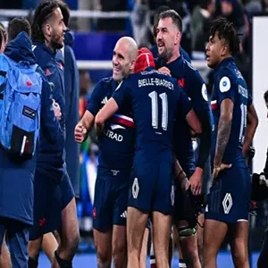
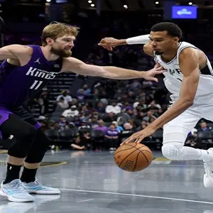
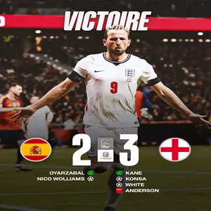
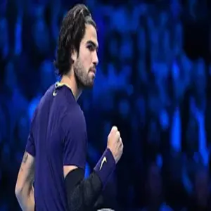

"L'une des plus grandes victoires de son histoire" : la presse
étrangère à genoux devant Dupont, Galthié et les Bleus.
Le XV de France fait l'unanimité chez les médias étrangers, éblouis
après la victoire arrachée face aux Springboks (21-19). Même en
Afrique du Sud, on s'incline devant les Bleus.

NBA : Wemby enchaîne avec les Spurs, les Sixers tombent.
Après le record, Wembanyama déroule ! Le champion des Spurs a
inscrit vendredi, 30 points en 26 minutes pour s'imposer à
Sacramento, quand les Cavaliers ont gâché le retour de LeBron James
à Cleveland.

Ligue des nations : A dix, l'Angleterre met fin à la folle série de
43 matchs sans défaite de l'invincible Espagne.
Les derniers champions d'Europe et du monde se sont inclinés contre
l'Angleterre (2-3), dimanche soir à Madrid, lors de l'ultime journée
de la Ligue des nations. Une grande première depuis mars 2024.

Carlos Alcaraz en démonstration face à Frances Tiafoe pour son
entrée en lice aux Finales ATP de Turin.
Pour son premier match aux Finales ATP de Turin, Carlos Alcaraz n'a
laissé aucune chance à Frances Tiafoe ce lundi après-midi avec une
victoire sans appel en 1h09 (6-2, 6-2). L'Espagnol, qui vise un
premier titre dans ce tournoi des maîtres, a fait forte impression
et confirme son statut de favori.